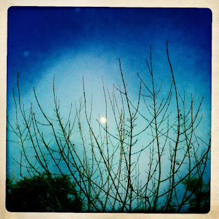

Recovered weblog entry
Familiar moon, familiar tree

This isn't the first time this tree has been the subject of a hipstaprint. Back in March of last year, I photo'd it in near full bloom the day we left for California.
Lens: John S
Film: Ina's 1969